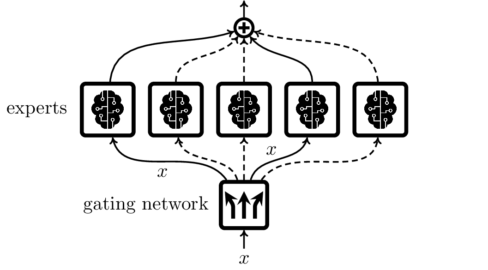

\(\DeclareMathOperator*{\expec}{\mathbb{E}} % Expectation \DeclareMathOperator*{\proba}{\mathbb{P}} % Probability \DeclareMathOperator*{\vari}{\mathbb{V}} % Probability \DeclareMathOperator*{\argmax}{argmax} \DeclareMathOperator*{\argmin}{argmin} \DeclareMathOperator{\sgn}{sgn} \)
8. Ensemble learning#
In Who wants to be a millionaire? contestants have the option to ask the audience for help with a quiz question. Often this successful: the majority vote indicates the right answer. The interesting feature here is that obviously the audience of game shows does not usually consist of experts. On the contrary, the typical audience member is arguably more ignorant than the contestants, who have already proved their merit by clearing the pre-selection process. Still, collectively, the audience is relatively strong. This phenomenon is called wisdom of the crowd. There seems to have been written a lot about the supposed wisdom of the crowd, even a whole book. Sometimes, though, the crowd is dead-wrong: The 80s, for example, were terrible and there’s no reason to celebrate them.
Ensemble learning combines several poor predictors to a better predictor. Broadly, there are two ways to do that:
a collective of classifiers decides by majority vote, or a collective of regressors predicts by taking the average; or
a sequence of classifiers or regressors is iteratively trained, where each tries to correct for the errors of its predecessors.
The second technique is called boosting. We first look at majority decisions.
8.1. Wisdom of the crowd#
An easy way to increase the performance in a classification task is to train several classifiers and then let them decide by majority voting.
To gain a first insight, consider a binary classification task and assume that we have access to \(T\) classifiers \(h_1,\ldots, h_T\) that each have a probability of \(p>\tfrac{1}{2}\) to classify a randomly drawn data point correctly (we assume here that the class \(y\) is completely determined by \(x\)). Assume, furthermore, that the classifiers are stochastically independent. (Clearly, this is an unrealistic assumption.) Then the probability that the majority vote decides wrongly is
As \(p/(1-p)>1\) we can upper-bound by
Let’s write \(p=\tfrac{1}{2}+\epsilon\) for \(\epsilon\in(0,\tfrac{1}{2})\).
What we have proved here is a famous result, Condorcet’s jury theorem, Why jury theorem? Condorcet tried to model the decision of a jury as a random experiment, with each juror having a certain probability to vote for the right decision. While the mathematics is wonderful, the model seems wildly implausible. originally found by the Marquis de Condorcet in 1785.
Theorem 8.1 (Condorcet’s jury theorem)
Let \(X_1,\ldots,X_T\) be stochastically independent random \(0,1\)-variables, each with \(\proba[X_i=1]=p\). If \(p>\tfrac{1}{2}\) then
This seems to indicate that there is a sure way to devise a nearly perfect classifier: simply assemble many stochastically independent classifiers that each have slightly better accuracy than pure chance. While it is often not hard to fulfill the second part, this is certainly not the case for the first part. Indeed, we do not expect classifiers to be independent: each should, by learning from the training set, hopefully gain some understanding about the ground truth.
Some measure of independence is clearly important for a majority voting ensemble to be effective: a collective of classifiers that simply consists of clones will not be better than a single member of the collective.
8.2. Short stochastic digression#
To cope with a collective of classifiers with stochastic interdependencies we need a stochastic tool, a sort of one-sided Chebyshev’s inequality.
For comparison, let’s recall Chebyshev’s inequality. For this let \(X\) be a random variable, and recall the definition of the variance of a random variable:
Then Chebyshev’s inequality states that for every \(\lambda>0\)
The one-sided variant of Chebyshev’s inequality is called Cantelli’s inequality:
Theorem 8.2 (Cantelli’s inequality)
For a random variable \(X\) and \(\lambda>0\) it holds that
\(\proba[X\geq\expec[X]+\lambda]\leq\frac{\vari[X]}{\vari[X]+\lambda^2}\)
\(\proba[X\leq\expec[X]-\lambda]\leq\frac{\vari[X]}{\vari[X]+\lambda^2}\)
Proof. We prove 1. first. For this, set \(Y=X-\expec[X]\) and observe that \(\expec[Y]=0\) and that
We write \(\sigma^2=\vari[X]\).
Then, we obtain, for every \(u\in\mathbb R\):
Obviously, \((Y+u)^2\) is a non-negative random variable, which means that we can use Markov’s inequality to get
Now, substitute \(u=\frac{\sigma^2}{\lambda}\):
To prove 2., apply 1. to \(Z=-X\) and \(\lambda\):
8.3. Dependent classifiers#
After this short digression, we come back to a collective of interdependent classifiers.3Based on The Condorcet Jury Theorem, Free Speech, and Correlated Votes, K.K. Ladha (1992) Assume that we have trained \(n\) classifiers \(h_i:\mathcal X\to\mathcal Y\), and we let \(h\) be the majority classifier
(If there are ties for the majority class, \(h\) simply returns an arbitrary majority class.)
Because the analysis becomes quite a bit more complicated otherwise, we now concentrate on a binary classification problem. We model the collective \(h_1,\ldots, h_n\) by a number of random variables \(X_1,\ldots, X_n\) that each take only the values 0 or 1, where 1 indicates a correct decision. That is, we set
We, moreover, set \(\bar X=\frac{1}{n}\sum_{i=1}^nX_i\).
Then, given a data distribution \(\mathcal D\) on \(\mathcal X\times\{-1,1\}\), we can express the true risk as follows
(Why \(\leq\) and not \(=\)? Because if \(n\) is even then \(\bar X=\tfrac{1}{2}\) may or may not result in a correct decision.) Thus, we need to focus on the probability that the majority is right:
(We drop the reference to the distribution as, in what follows, it will play no role.)
For this probability to be large, the expectation of \(\bar X\) should better be larger than \(\tfrac{1}{2}\). The expectation is:
Let us write \(\bar p=\expec[\bar X]\). It seems reasonable to assume that \(\proba[X_i=1]>\tfrac{1}{2}\), i.e.\ that each classifier actually improves the collective at least a little bit. Then \(\bar p>\tfrac{1}{2}\).
Set \(\sigma^2=\vari[\bar X]\). Then
where \(\delta=\bar p-\tfrac{1}{2}>0\). Cantelli’s inequality now yields:
So, let’s compute the variance \(\sigma^2\) of \(\bar X\).
The thing to note there is that the term \(\expec[X_iX_j]\) makes up an essential part of the correlation coefficient of the random variables \(X_i,X_j\):
The correlation coefficient takes values in \([-1,1]\) and is a measure of how much \(X_i\) and \(X_j\) influence each other. In particular, stochastically independent variables have correlation coefficient 0. (However, correlation 0 does not necessarily imply stochastic independence.)
In our setting, we can expect positive correlation. Indeed, if one classifier detects the true class, then another one seems more likely to do so, too – perhaps because they both decide because of the same feature.
To simplify a little bit, let us assume that all \(X_i\) have the same expectation, which is then equal to \(\bar p\). Then \(\proba[X_i=1]=\bar p\) and \(\vari[X_i]=\bar p(1-\bar p)\), and thus
We also write \(c\) for the average correlation coefficient
We get from above:
Let me point out here that we now have obtained a complicated proof of Condorcet’s jury theorem. Indeed, if \(c=0\) then \(\sigma^2\to 0\) for \(n\to\infty\), which together with (8.1) yields \(\proba[\bar X>\tfrac{1}{2}]\to 1\).
If \(c>0\), however, it no longer follows that a correct majority decision tends to certainty with increasing \(n\), and indeed, this is sometimes not the case. (Recall the clone collective.)
{kind=link}
Fig. 8.1 \(\bar p\mapsto \frac{\delta^2}{c\bar p(1-\bar p)+\delta^2}\) for different values of the average correlation \(c\).#
For larger \(n\), the variance \(\sigma^2\) becomes smaller. In particular, in the limit, we get \(\sigma^2\to c\bar p(1-\bar p)\), and thus with (8.1) the following lower bound
Fig. 8.1 shows the right-hand side as a function of \(\bar p\) for different values of \(c\). We see that for only small average correlation coefficient we get a significant boost for many values of \(\bar p\), or at all. Now, this is only a lower bound. That is, it would be good to have a closely matching upper bound, or to know that the lower bound is in fact tight. Unfortunately, I cannot provide either.
What can we deduce from these observations? A collective of classifiers can significantly boost accuracy, but only if the classifiers are at most lightly correlated. We will see below that this insight drives the design of the most popular majority voting classifier, the random forest.
Ensemble techniques are very powerful. Apparently, the top machine learning algorithms in competitions are often ensembles of predictors. Neural networks offer a very convenient way to assemble such an ensemble: by the stochastic nature of the initialisation and SGD, each training run of a neural network will yield a different local minimum. Each such minimum yields a different classifier; the ensemble of several of such training runs may be a significantly better classifier.
The disadvantages of an ensemble of classifiers are obvious: longer training times, slower classification performance and larger energy consumption.
See also
Popularity of ML algorithms
Neural networks enjoy a lot of hype and certainly are the most powerful machine learning algorithms that we know. They are, however, difficult and expensive to train and to fine-tune. Ensemble algorithms are often simpler to use and often powerful enough. A 2021 survey by kaggle asked for the most often used machine learning algorithms. Ensemble techniques proved to be very popular:
Linear or logistic regression
Decision trees or random forest
Gradient Boosting (ie, xgboost, lightgbm etc.)
The first type of neural networks (convolutional networks) came in fourth place. It should be noted, however, that the ranking distinguished between several types of neural networks.
8.4. Random Forest#
One of the most popular ensemble machine learning algorithms is random forest. Random forest trains an ensemble of decision trees, and then classifies by majority voting (or alternatively, by voting weighted by confidence levels).
As we have seen in Section 8.3, there are two design goals for a majority voting classifier:
each decision tree of the ensemble should have a large expected accuracy; and
the ensemble should be diverse, ie, any two decision trees should only be lightly correlated.
These goals inform what kind of decision trees we base our ensemble on. There are two extremes of decision trees, decision stumps (the base classifiers of \alg{AdaBoost}) and fully grown trees. Which of these should make up the ensemble? Decision stumps are not expected to be very accurate; they are too crude for that. Fully grown trees are prone to overfitting but normally more accurate. (And in fact majority decision inhibits overfitting.) Moreover, decision stumps will not be very diverse. There is simply not enough variation, there are only so many ways you can carve up a space with axis parallel hyperplanes. Two fully grown decision trees, however, can be wildly different.
It is therefore recommended to fully grow the decision trees for random forest, ie, to use decision trees of maximum depth, such that, typically, leaves represent single data points.
{kind=link}
Fig. 8.2 Random forest benefits from deeper and more trees. Test error vs number of decision trees in the ensemble, with varying maximum depths. Data set is on Thyroid function. Each setting is repeated 100 times, plot shows means and 95% confidence intervals.#
Two methods ensure a maximum of diversity among the trained decision trees. The first is bootstrap sampling. Each of the individual decision trees receives its own training set generated from the whole training set by sampling with replacement. More precisely, if \(S\) is the entire training set of size \(m\), say, then for each decision tree \(T\) a fixed number \(m'\) of samples are chosen uniformly with replacement from \(S\). That means that, typically, the training set \(S_T\) of tree \(T\) will contain some of the samples of \(S\) twice (or even more often), and will miss some others from \(S\). In this way, two trees \(T,T'\) of the ensemble will be trained on different training sets \(S_T\), \(S_{T'}\). Because a random forest aggregates the classifications of classifiers trained on bootstrapped sets, it is often called a bagging classifier, a contraction of bootstrapping and aggregating, which is clever if you like that sort of thing. In a random forest classifier the parameter \(m'\) is often chosen to be equal to \(m\) – this still means that the training sets of the different trees will likely be different. rf-corr
The second technique that ensures diversity concerns how the decision trees are grown. Let’s recall how normally a decision tree is grown. Given a data points \(x^{(1)},\ldots, x^{(m)}\in\mathbb R^d\) and their classes \(y^{(1)},\ldots, y^{(m)}\in\{1,\ldots, k\}\) the tree is grown iteratively by splitting existing leaves if it increases some purity measure, such as the Gini index. To do so, at each leaf for each of the \(d\) features (dimensions of \(\mathbb R^d\)) the best split \(x_d\leq t\) is computed, and then, among all the features, the best split is chosen. For random forest, at each existing leaf the best split is determined not over the set of all \(d\) features but only over a randomly chosen subset of the features. That is, at each leaf, a number \(p\) of the \(d\) features is randomly chosen and then the best split among these \(p\) features is computed. For a random forest classifier it is recommended to pick \(p=\sqrt d\).
To sum up:
each decision tree of the ensemble is trained on a random subset of the whole training set (chosen via bootstrap sampling); and
when training a decision tree, splits at leaves are not chosen over all features but only over a random subset of the features.
Training and prediction of a random forest can easily be parallelised: indeed, it suffices to split the decision trees into groups that are then trained or evaluated on different machines.
The average correlation coefficient and accuracy can be empirically estimated by examining the trees in the ensemble. It appears that bootstrapping and random feature selection decrease average accuracy (in comparision to unadulterated decision trees), and that they also do decrease correlation. The trick then is to find the right balance between these two effects.
8.5. Noise features#
rf_noise_vars The design of random forest gives us some insights when random forest is adequate and when not. Let’s look at one set of circumstances when it is not.
In many classification tasks some of the inputs are just noise and are not in any way indicative of the class. This is typically the case, for instance, for boundary pixels in image recognition. In the MNIST digit recognition task there are some pixels, the upper left pixel, for example, that are white for every single sample. In a more realistic image recognition task the upper left pixel will typically still be completely unrelated to the class but show different values for different images – it’s simply noise.
{kind=link}
Fig. 8.3 Accuracy of random forest suffers if there are many noisy features. In a binary classification task with two features, different numbers of noise features where added, each normally distributed independently of the class. Each setting was repeated 100 times; the plot shows mean and 95% confidence intervals. While both, AdaBoost and random forest, perform worse with increased number of noise features, \alg{random forest} is much more severely affected.#
Many such noise features can severely hamper random forest. Why? The decision trees of the ensemble are not grown with all the features. Rather, at each potential split we choose randomly \(\sqrt d\) of the \(d\) features and then compute the best split according to this random subset. If there are many noise features then it may happen often that there is no real feature among the randomly chosen subset. (Compute the probability!) The split then is just based on noise and becomes worthless. The effect of this can be seen in Fig. 8.3.
As a consequence, if many features are simply noise or only loosely indicative of the class it may be beneficial when using random forest to suppress these.
Mixture of experts
Training and inference in large neural networks is very costly and consumes a lot of energy. A mixture of experts model may help to alleviate theses costs. A mixture of experts model combines several neural networks, the experts, with a simple neural network, the gating network. On input \(x\), the gating network estimates which \(k\) of the experts are most suitable to treat the input and then forwards \(x\) to only those \(k\) networks. Their output is then combined, perhaps through a weighted sum, to produce the ultimate output of the model. The hyperparameter \(k\), the number of active experts, is typically small, perhaps \(k=4\).
{kind=link}
The model enjoys the advantages of an ensemble model, increased accuracy, and because the individual experts typically have fewer parameters than a large model of comparable performance, it also needs less compute. For example, the large language model DeepSeek-V2 has 236 billion parameters in total, but in each step only about 10% of these are involved in the computation. It is claimed that the model has about 40% lower training cost than a comparable model.
Mixture of Experts Explained
DeepSeek-V2: A Strong, Economical, and Efficient
Mixture-of-Experts Language Model, DeepSeek-AI (2024), arXiv:2405.04434
8.6. Boosting#
A classifier may show bad performance due to two reasons:
it may overfit, ie, it fits the training set well but not the data generating distribution; or
it may underfit; it is not expressive enough to fit the training set, or the data generating distribution.
In a random forest, expressive classifiers are combined (namely, deep decision trees). While each individual tree has a tendency to overfit, averaging over the trees greatly reduces that tendency.
Boosting6There’s a whole book on Boosting, by R.E. Shapire and Y. Freund, MIT Press (2012). is fundamentally different: There, we combine several weak classifiers, classifiers that underfit, to a strong classifier. Weak classifiers are boosted to strength. The idea is that the ensemble classifier starts with a weak, underfitting base classifier to which, iteratively, more classifiers are added. This makes the ensemble classifier stronger (more expressive). We stop when the ensemble classifier starts to overfit.
AdaBoost Why the name AdaBoost? According to the inventors of AdaBoost, Shapire and Freund, it’s short for adaptive boosting. consists of a weighted sum of weak classifiers, typically decision stumps. In the first step a weak classifier is trained. As a weak learner it will not be able to fit the training set perfectly, and thus misclassify some samples. Generalisation error will be small, though. Then, more weight is attributed to misclassified samples of the traininig set, so that the next classifier will work harder to correctly classify those. The two classifiers are then combined: they decide by weighted majority vote. Then, more weight is put on still misclassified samples, and a third weak classifier is trained, and so on; see Fig. 8.4.
{kind=link}
Fig. 8.4 The effect of boosting: we iteratively combine six simple classifiers, each one an axis-parallel half-plane. In each panel the decision boundary of the combined classifier is shown, as well as the training set (two classes), with misclassified samples shown with larger markers. The dashed line shows the decision boundary of the new classifier in each step. Observe that the decision boundary becomes increasingly more complicated with increased number of classifiers. Also, previously correctly classified samples may become misclassified.#
The individual classifiers are typically weak learners. By combining them we gradually increase their expressiveness. Why weak learners? Because these tend to generalise well; they don’t overfit. The combination of several such learners will have larger generalisation error and, with increasing number of learners, will eventually overfit. By tuning the number of combined learners, the right balance between expressiveness and good generalisation can be found.
8.7. AdaBoost#
We consider a binary classification task. That is, as usual, we draw a training set \(S\) from \(\mathcal X\times \mathcal Y\), where \(\mathcal Y=\{-1,1\}\). Moreover, we aim to minimise the average zero-one loss
where \(\ell_{0-1}\) is the zero-one loss and \(h:\mathcal X\to\mathcal Y\) is a classifier.
adaboost The learning algorithm AdaBoost typically combines decision stumps: decision trees of depth 1, or more explicitly, classifiers \(h^\sigma_{j,t}\) described by a single decision rule \((j,t)\) and a sign \(\sigma\in\{-1,1\}\)
Decision stumps are weak: only the simplest tasks will be classified with high accuracy by decision stumps. In principle the weak learners do not have to be decision stumps but could be any set of classifiers that:
can be computed efficiently; and that
allow for weighted loss minimisation.
What does the second point mean? Given a set of normalised non-negative weights \(p_z\), \(z\in S\), ie, a probability distribution over \(S\), the weighted empirical loss is
(Normalised means that \(\sum_{(x,y)}p_{(x,y)}=1\).)
Now, let \(\mathcal W\) be a set of classifiers for which the weighted loss can be minimised efficiently. That is, for every probability distribution \(p\) over \(S\) the optimisation problem
can be solved efficiently. We will see that this is indeed the case for decision stumps.
AdaBoost now computes, in each iteration \(t\), a weak classifier \(h_t\) and a weight \(\alpha_t\) and then outputs the classifier \(\sgn\sum_{t=1}^T\alpha_th_t\). That is, the decision is made by weighted majority. (Again, in the unlikely case of a tie, we arbitrarily classify the data point as class 1 by setting \(\sgn(0)=1\).)
Algorithm 8.1 (AdaBoost)
Instance Training set \(S\), number of iterations \(T\).
Output A classifier.
Put \(p^{(1)}_{(x,y)}=\frac{1}{|S|}\) for every \((x,y)\in S\).
for \(t=1,\ldots, T\)
Minimise (8.2) over \(\mathcal W\), and let \(h_t\) be a minimiser.
Compute the error
Put \(\alpha_t=\tfrac{1}{2}\log\left(\frac{1}{\epsilon_t}-1\right)\).
Put
output \(\sgn\sum_{t=1}^T\alpha_th_t\).
rf-v-ada Decision stumps are certainly weak classifiers – but we do not want too weak classifiers. The whole process makes no sense if not each of the weak classifiers gives at least a little bit of insight into the task. We formalise that in the assumption that there is a \(\gamma>0\) such that:
That is, in every iteration the weak learners perform at least a bit better than a coin toss on the weighted training set: Their error rate is at most \(49.9\%\), say.
Together the weak learners are strong:
Theorem 8.3
If (8.3) holds then the training error of the classifier \(h^*\) output by AdaBoost (Algorithm 8.1) is
Proof. Write \(g_t=\sum_{i=1}^t\alpha_ih_i\) for every iteration \(t\), and also put \(g_0\equiv 0\). Thus, the classifier output by AdaBoost is \(\sgn g_T\). We consider exponential loss as surrogate loss function, namely, we set
Note that \(Z_0=1\).
Now, as \(yg_T(x)\geq 0\) is equivalent to \(y=h^*(x)\) for every \((x,y)\in S\) it follows for misclassified \((x,y)\in S\) that \(\ell_{0-1}(h^*(x),y)=1= e^0 \leq e^{-yg_T(x)}\) and thus that
Therefore, it is enough to prove that \(Z_T\leq e^{-2\gamma^2T}\).
We write
where we have used that \(Z_0=1\). We deduce that it is enough to prove
Next, we see by induction that for every \((x,y)\in S\)
Then
as \(g_{t+1}=\alpha_{t+1}h_{t+1}+g_t\). Next we use (8.5) to write
We note that the last sum is simply \(\epsilon_{t+1}\), and that the first sum then is equal to \(1-\epsilon_{t+1}\) as the \(p^{(t+1)}_{(x,y)}\) sum up to 1. We get
Now we substitute \(\alpha_{t+1}=\tfrac{1}{2}\log\left(\frac{1}{\epsilon_{t+1}}-1\right)\)
By (8.3), we have that \(\epsilon_{t+1}\leq \tfrac{1}{2}-\gamma\). Moreover, the function \(a\mapsto a(1-a)\) is monotonically increasing in \([0,\tfrac{1}{2}]\). Thus, the expression under the square root is maximised by substituting \(\tfrac{1}{2}-\gamma\) for \(\epsilon_{t+1}\):
Finally, we use \(1+a\leq e^a\), which holds for all real \(a\), and obtain \(\frac{Z_{t+1}}{Z_t} \leq e^{-2\gamma^2}\), which is (8.4).
Looking closely at the proof, we note that AdaBoost attempts to minimise a surrogate loss function, namely the exponential loss
{kind=link}
Fig. 8.5 Three loss functions. The zero-one loss here is interpreted as \(z\mapsto \ell_{0-1}(y\sgn z,1)\). The logistic loss function was defined in Section 1.4.#
AdaBoost has some advantages:
simple algorithm, easy to implement;
Few tunable parameters: number of weak classifiers and nature of weak classifiers.
It also has a major disadvantage: The performance appears to be mediocre.
See also
AdaBoost cannot fit every Boolean function; see here.
There is an extension of AdaBoost to multiple classes; see Multi-class AdaBoost, T. Hastie et al. (2009) Statistics and Its Interface
The boosting principle also applies to regression; see Improving Regressors using Boosting techniques, H. Drucker (1997) link
8.8. Gradient boosting#
AdaBoost, as presented above, does binary classification. What if we have a regression problem? What if the loss function is somewhat unusual? It is not immediately clear how AdaBoost would need to be adapted. The framework of gradient boosting helps.
We consider a regression problem, with a training set \(S\) of pairs \((x,y)\) with \(x\in\mathbb R^n\) and \(y\in\mathbb R\), and a loss function \(\ell\) that is sufficiently smooth (with perhaps a finite number of exceptions). It is not wrong to imagine that \(\ell\) is equal to the square loss, ie
AdaBoost belongs to the class of additive models: Models of the form
that are trained iteratively, such that, in each round we add a new predictor \(h_{T+1}\) to the previously computed algorithm \(\phi_T\). That is, in round \(T+1\) we look for a predictor \(h_{T+1}\) and then form
(Above, in Adaboost, we still had a coefficient \(\alpha_t\) for the new predictor. To keep things simple, I’ve included that in the predictor, ie, \(\tilde h_t=\alpha_t h_t\).)
In round \(T+1\), how now can we decrease the training error? We search for a predictor \(h_{T+1}\) such that the training error
becomes as small as possible.
To do so, let us consider, for a given \(y\in\mathbb R\), the loss as a function of prediction:
and let us write \(\ell'\) for the derivative of \(\ell\) with respect to the prediction \(y'\). That means, if \(\ell\) is the square loss then
And if \(\ell\) is equal to the absolute loss, ie, if \(\ell(y,y')=|y-y'|\) then
(Except for at \(y'=0\), where the derivative is not defined.)
With this we do a first order Taylor approximation
Recalling that we want to minimise the training error – what does that tell us? That \(h_{T+1}(x)\) should point in direction of \(- \ell'(y,\phi_T(x))\). That is, ideally,
where \(\alpha>0\) can be seen as a learning rate.
In the case of the mean square loss, ie, \(\ell(y,y')=(y-y')^2\) this means \(h_{T+1}\) should fit the residuals \(y-\phi_T(x)\) for \((x,y)\in S\) as then
8.9. XGBoost#
XGBoost10XGBoost: A Scalable Tree Boosting System, T. Chen and C. Guestrin, arXiv:1603.02754 combines gradient boosting and regularisation. It is a relatively simple but quite powerful learning algorithm that was sucessfully used in a number of competitions. Let me just give a rough overview on XGBoost without going into too many details.
xgb XGBoost introduces a penalty term \(\Omega(h_{t})\) on the trees \(h_{t}\). The term penalises large weights and also large trees. The loss function becomes
AdaBoost adds a very simple tree classifier, usually a decision stump, in each iteration. Because of the penalty term \(\Omega(h_{t})\), XGBoost can allow more complex trees in each iteration. A deep tree, however, will only be added if its benefit compensates for the penalty that it incurs.
Besides the complexity penalty there is a second element that distinguishes XGBoost from other gradient boosting algorithms: XGBoost does a second-order Taylor approximation of the loss function. That is,
Here, again, we write
Then, a tree classifier \(h_{T+1}\) is sought that approximately minimises the parts of the second-order Taylor approximation of \(L_S(\phi_{T+1})\) that actually depend on \(h_{T+1}\). These are:
This is done in a similar way as decision trees are learnt: Starting with a trivial tree, in each step we check whether splitting a leaf will improve the loss function.